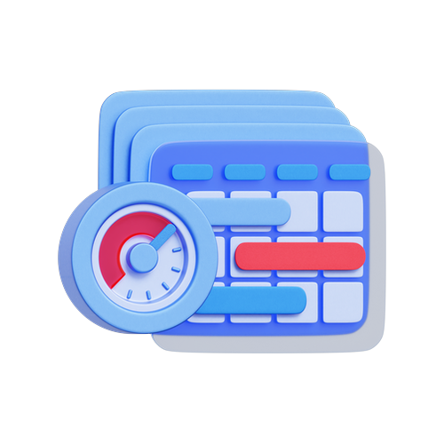
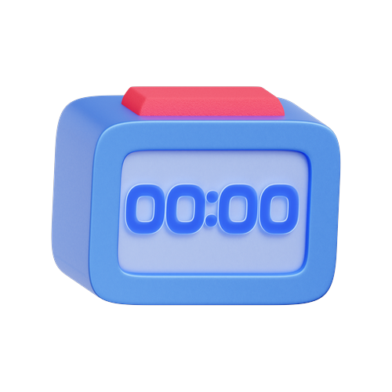
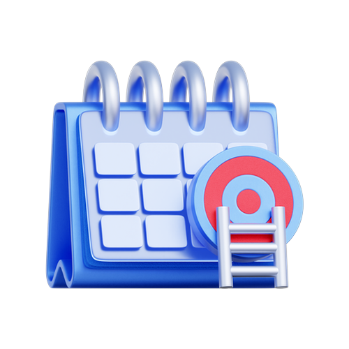
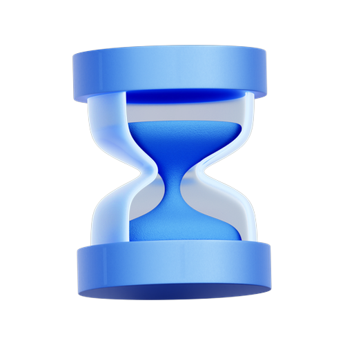
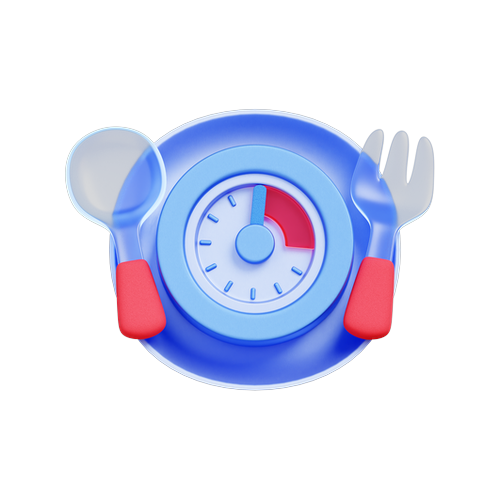
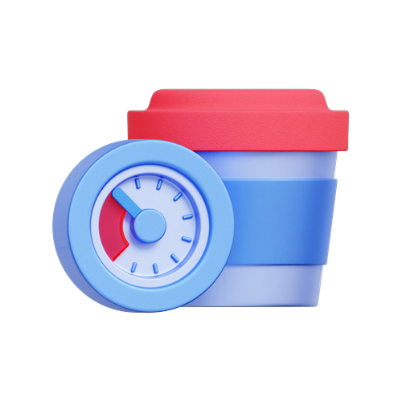
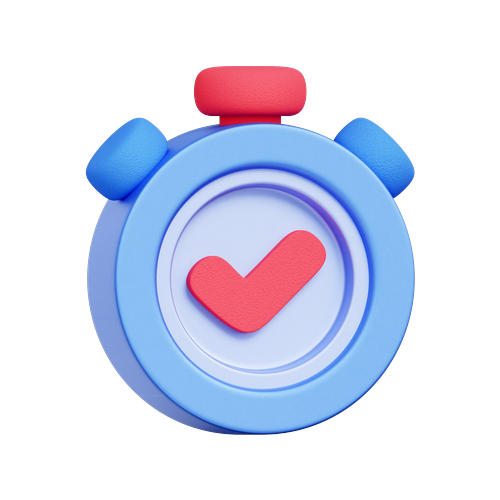

Pick a plan
Start with 16:8, or choose daily, OMAD-style, extended, or Ramadan. Advanced schedules unlock on Plus.
PureBite
A live intermittent fasting tracker — countdown, plans from 16:8 to Ramadan and extended fasts, plus recipes when your eating window opens.
How it works
No calorie diary. No barcode camera. Just a clear timer for intermittent fasting — and help deciding what to eat when the fast ends.

Start with 16:8, or choose daily, OMAD-style, extended, or Ramadan. Advanced schedules unlock on Plus.

See time elapsed on a live ring. Optional reminders — only after you choose to enable them.

History and a simple streak keep you coming back without turning fasting into a social feed.
Plans
Core timers stay free to start. Plus unlocks advanced ratios, custom extended fasts, and deeper recipe access.

12:12 through 18:6, plus 24h plans you can use for OMAD or alternate-day style weeks — without calorie logging.
24h to multi-day (up to 7 days) with an in-app safety sheet and daily check-ins. Stop if you feel unwell.

Local Fajr and Maghrib on your device for suhoor and iftar. Follow your mosque if they add precaution minutes.
Insights and Learn articles stay educational — not medical claims. Talk to a clinician before big diet changes.

Eating window Know what to cook when the timer flips.Recipes stay secondary to fasting. Browse free ideas for break-fast; PureBite Plus unlocks the fuller catalog, steps, and shopping list depth.
Progress
Everything about your fasts stays on your iPhone — no account required.

See completed fasts, a week strip, and streak momentum without a social feed.
Optional mood and notes after sessions — stored on device, never required to use the timer.
Track weight and basic body metrics in US or Metric units from You settings.
Short, claim-safe articles on how fasting windows work — open from You anytime.
Free to begin. Core plans like 16:8 stay startable — Plus is optional for advanced schedules and deeper recipes.
PureBite is not medical advice and is not a medical device. Intermittent fasting is not right for everyone — talk to a doctor before changing how you eat.